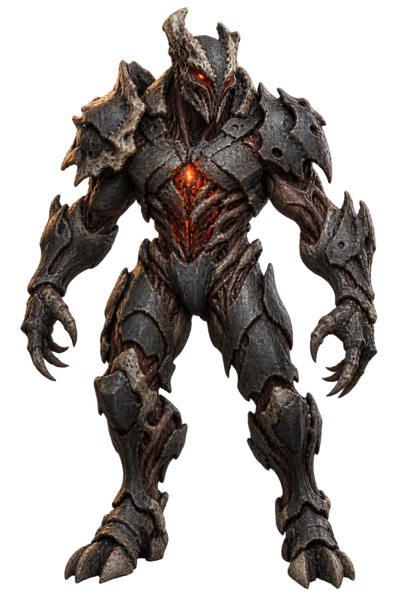
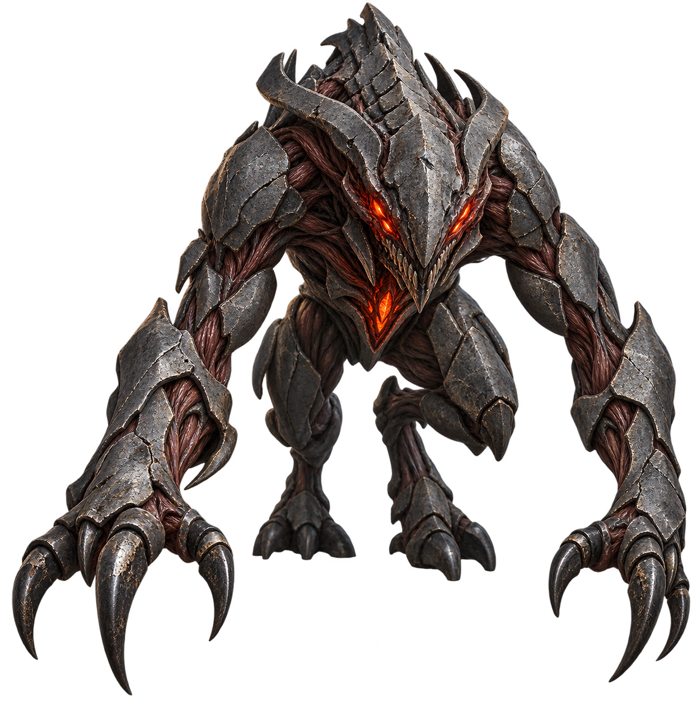
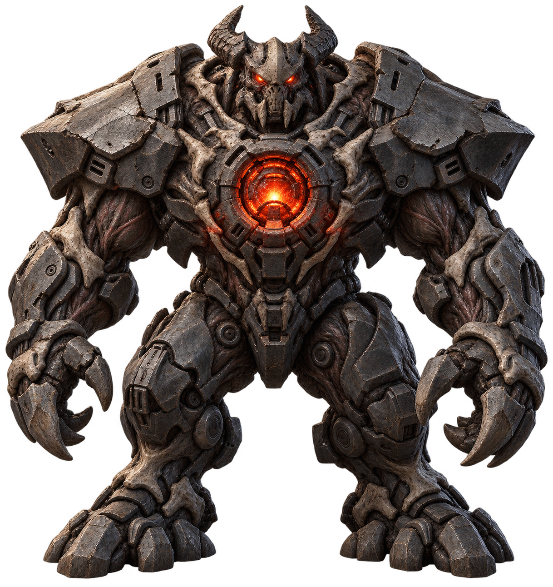
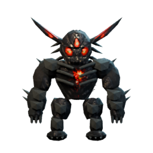

Grunt
THE BRAWLERThe baseline threat: upright, balanced, and heavy. Broken armor frames a compact ember core.
LOOK FORA clean outline without losing the brutal, worn surface.
HOSTILE LIFE / FIRST-PERSON VIEW
One visual family. Three unmistakable threats.
Explore the shapes, materials, and read at a distance before we commit to animation.
01 / THE PROPOSED FAMILY
Scarred metal · dark sinew · ember light

The baseline threat: upright, balanced, and heavy. Broken armor frames a compact ember core.

A low, forward silhouette. Long forearms and swept armor make the intent to lunge immediate.

A walking barricade. Broad shoulders and a recessed chest weapon communicate weight and range.
Static AI-generated concepts · equal image-box height for comparison · smaller screens may constrain width · no gameplay changes
02 / THE DISTANCE TEST
Each image fits inside a 72 × 48 px box, in white silhouette. This checks outline recognition, not animation or combat readability.

03 / THE STARTING POINT
The previous hostile art was shared by the grunt, charger, and sentry. Their scale varied, but their visual identity was the same.
The proposed direction keeps the dark industrial materials and hot cores, while giving each role a distinct body shape.
The source sprite is shown enlarged here. New concept detail is not a promise of the final runtime resolution.
04 / THE LOCK-IN CHECKPOINT